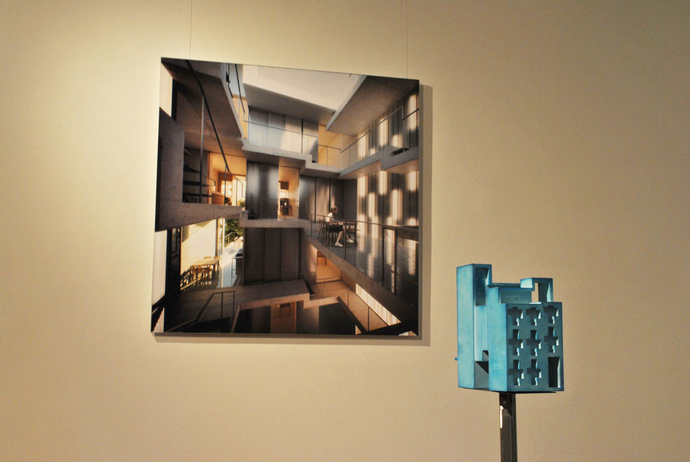

5 Projects between Lisbon and Athens
Exhibition - Lisbon - 2013
In its beginning, the office production was developed between Lisbon and Athens, an improvised context that placed several obstacles, influencing the work method and postponing the actual construction.
The result is a collection of design processes and their different residues. Most of the work is competitions in collaboration with other designers and in different states of development.
...
The explosion of media contributed to abolish the frontier between representation and content. This exhibition is a deliberate action of resistance against the immediacy of the final image and a critical research on the different means and degrees of representation. Five scale models punctuate the space of the gallery. One of the walls displays 5 final images; on the other one, its reverse: the production process.

Team: João Moura Fagulha, Raquel Maria Oliveira, João Prates Ruivo Video produced by: André Adónis. FORA would like to thank Christina Casnellie, Tiago Farinha, Sara Ruivo and Lucia Lancheros for their support.